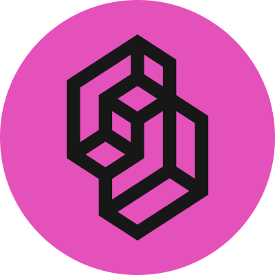

Expanso×Jev
Connecting…
Synthetic demo events
Buckets are local demo files
Buckets are local demo files
Sourceproduction logs

Jevby TypeSafeActionable?Severity?Team?Recurrence?
Shape→Count→Match rules→Gate→Route
0%ask Jev
0%no model call
Inject a log line
0held by Expanso
Loading…